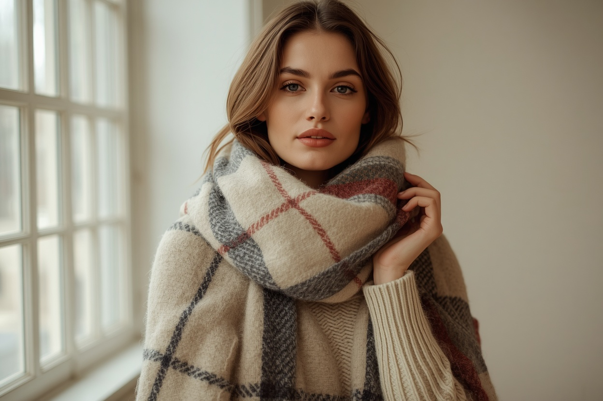
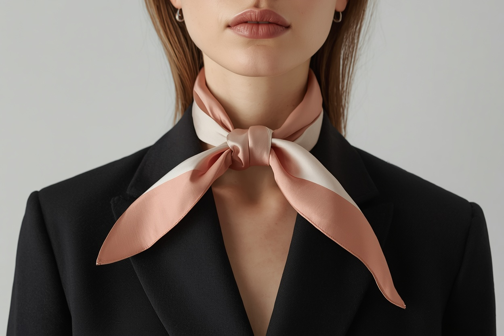
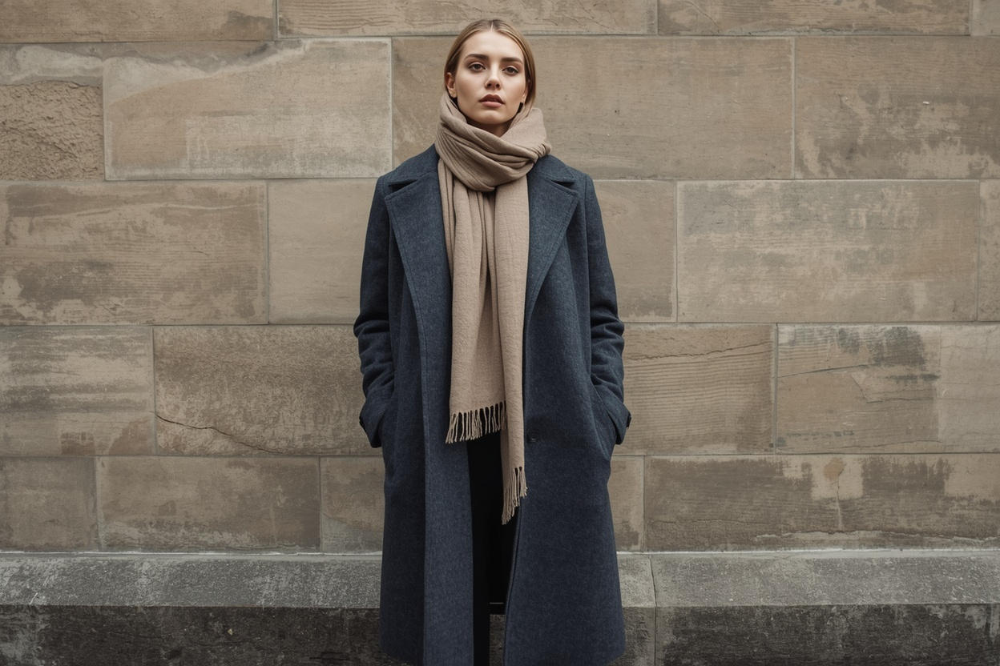

A scarf is one of the easiest accessories to change an outfit, and one of the easiest to get wrong. The wrong size feels bulky, the wrong knot looks stiff, and the wrong fabric itches by lunchtime. This guide explains how to style a scarf, from choosing the right size and fabric to 12 ways to tie and wear one and how to pair it with coats, so you can find the winter scarf styles that suit you.
It is based on published styling guides and retailer guidance, listed at the end, and not on hands-on testing.
Scarf, Shawl, Stole or Wrap: What Is the Difference?
The words are often used loosely, but retailers define them a little differently. Rise and Fall describes a scarf as usually square or rectangular and worn around the neck, head or waist, a shawl as a larger piece that covers the shoulders and upper body, and a stole as a long, fairly narrow rectangle often worn for evenings. It describes a wrap as the broadest term, since it refers to how a piece is worn rather than to a fixed shape.
In practice, a large blanket-style scarf can work as a scarf or a shawl, which is why some of the ways below use the same piece in different ways.
How to Choose the Right Scarf
Length and width
Trendhim suggests holding the scarf by its ends with your arms outstretched: if it roughly matches your arm span, it should sit well around your neck. It describes a standard width as about 12 to 16 inches and a medium length as the most versatile for warmth and styling options. Tube scarves are the exception to the arm-span rule.
Fabric
The right fabric depends on how you will wear it. The table below summarizes common options, based on the descriptions from Trendhim and Rise and Fall. Care labels vary by product, so always follow the one on your scarf.
| Fabric | What to Know | Best For | Care |
|---|---|---|---|
| Merino wool | Warm and soft | Warmth with softness | Sometimes machine-washable, but heat and agitation can cause shrinking or felting. Check the label. |
| Wool | Warm and durable, though some wool can itch | Cold weather and frequent wear | Varies by product. Follow the care label. |
| Cashmere | Very soft and very warm, and needs gentler handling | Softness and warmth | Usually gentle washing and flat drying. |
| Silk | Mainly for style and formal occasions | Neck bows and dressier looks | Follow the care label. |
| Acrylic | A good option for sensitive skin or wool allergies | Sensitive skin | Follow the care label. |
| Cotton and jersey | Breathable | Warmer climates | Follow the care label. |
Cashmere and wool are the usual winter choices. Rise and Fall notes that cashmere offers more warmth per gram, but a heavier, denser wool scarf can be warmer overall, and that wool is generally better suited to frequent, robust wear.
Color
Trendhim says there are no fixed rules. Neutrals such as grey, beige and black are the most versatile, and you do not need to match the scarf exactly to your outfit. A bold or patterned scarf often looks best against neutral clothing.
12 Ways to Tie and Wear a Scarf
Whether you are learning how to wear a scarf for the first time or looking for a fresh idea, these methods are grouped by scarf type. Each one is a simple method described in the guides we reviewed, written here in our own words.
Everyday Neck Styles
1. The Knotted Loop
Fold the scarf in half to make a loop, place it around your neck, pull the loose ends through the loop and tighten. Oliver Bonas notes that you can add extra knots for warmth. Time Out calls a version of this the simplest and most popular style, sometimes called the European way.
2. The Toss
Wrap the scarf around your neck with one end longer than the other, then toss the longer end over the opposite shoulder. It looks relaxed and takes a few seconds.
3. The Classic Wrap
Place the unfolded scarf behind your neck and cross the ends once at the front. For a wide scarf, fold it in half first. It pairs well with a puffer jacket in cold weather.
4. The Drape
Drape the unfolded scarf around your neck so both ends hang evenly down the front. It is the quickest option, and it suits a scarf with bold colors or a pattern, since the whole length is visible.
5. The Overhand
Tie a loose knot under your chin, then bring the top end out above the knot for extra volume and warmth. Oliver Bonas notes it works with both lightweight and heavier scarves.
How to Style a Blanket Scarf: Oversized Styles

6. Over One Shoulder
Drape an oversized knit scarf over one shoulder and layer it over a wool coat in a similar shade. The Zoe Report highlights this as a tonal look.
7. The Loose Turtleneck
Fold a pashmina in half, place the center at the front of your neck, crisscross the ends and tie a loose knot at the front. Tuck the knot under the wrapped part and keep the upper layer loose. Time Out says this creates a loose turtleneck effect, and flattening the ends over your chest reduces puffiness.
8. The Shoulder Wrap
Drape the unfolded scarf evenly over both shoulders, pull one front corner back behind the opposite shoulder, then tuck the other corner over the opposite shoulder and behind your neck. Who What Wear says a bigger scarf works better for this method.
9. Belted Over the Shoulders
Fold the scarf lengthwise, drape it evenly over your shoulders and fasten a belt at your waist so it cinches the scarf in the front. Who What Wear says belting a scarf adds polish to an outfit.
How to Wear a Silk Scarf and Other Square Scarves

10. The Neckerchief
Fold a square scarf in half diagonally, bring the corners to the front and tie a loose knot. Move the knot to the side of your neck if you like. Oliver Bonas describes this method for square scarves.
11. The Triangle
Lay the point of the folded scarf over your chest, wrap the two ends around the back of your neck and tie a small knot at the front. You can move the knot to the side.
12. The Silk Bow
Tie a silk scarf into a bow at the neck. The Zoe Report suggests wearing it with a sweater and trousers, which makes a simple outfit look more finished.
How to Pair a Scarf With a Coat
The scarf and the coat should work together. Trendhim offers these practical suggestions:

- Trench coat: choose a medium-to-long neutral scarf that does not hang below the coat when unwrapped.
- Suit and overcoat: choose cashmere or merino in a neutral tone and avoid chunky textures.
- Work coat: a short, light grey wool scarf works well underneath.
- Leather jacket: a chunky wool scarf suits a casual look.
- Materials: a scarf and coat in the same fiber can look cohesive, but contrast can work too. What matters most is that the weight and texture feel balanced, so a bulky scarf does not fight a heavy coat collar and a delicate scarf does not disappear against a thick coat.
For a contrast of materials, Who What Wear suggests pairing a chunky brushed scarf with a vinyl puffer coat, or a large black-and-white graphic check scarf. If you are building the full look, our guide to luxury handbag trends covers bag styles that sit well with a scarf and coat.
How to Care for a Scarf
Always check the care label first. Rise and Fall notes that cashmere usually needs gentle washing and flat drying, that wool care varies by product, and that merino is sometimes machine-washable, but heat and agitation can make wool shrink or felt. Cashmere can pill where it is exposed to friction, and wool can pill too, depending on the fiber and construction.
If a wool scarf feels itchy, a softer fiber such as merino may be more comfortable, and Trendhim lists acrylic as a good option for sensitive skin or wool allergies. Skin sensitivity varies from person to person, so choose what feels comfortable against your neck.
Common Scarf Mistakes to Avoid
- Wearing a scarf that is too bulky under a coat with a thick collar.
- Choosing a long scarf that hangs below the hem of your coat.
- Matching every color exactly instead of letting one piece stand out.
- Using a scarf that is too short for the style you want, which limits the knot options.
- Ignoring the care label on cashmere and wool scarves.
Frequently Asked Questions
What is the easiest way to tie a scarf?
The knotted loop, where you fold the scarf in half, wrap it around your neck and pull the ends through the loop, and the toss, where you throw one end over your shoulder, are the simplest and need no practice.
How long should a scarf be?
Trendhim suggests holding it by its ends with your arms outstretched. If it roughly matches your arm span, it should look right around your neck. A medium length offers the most styling options.
What fabric is best for a winter scarf?
Wool and cashmere are the usual choices. Merino wool balances warmth and softness, cashmere is very soft but needs more careful handling, and acrylic can suit sensitive skin.
How do I stop a scarf from looking bulky?
Choose a thinner scarf or fold it flat before wrapping, and avoid knots that sit under a thick coat collar. Flattening the ends over your chest can also reduce puffiness.
Can I wear a scarf with a puffer coat?
Yes. A chunky scarf or a graphic check can contrast well with a puffer, and a simple wrap or drape keeps the look comfortable.
Further Reading
Guidance above draws on these sources, which we read in November 2026. Pages may change:
- Who What Wear: How to tie a blanket scarf
- Oliver Bonas: How to wear and tie a scarf
- Time Out Chicago: How to tie a winter scarf
- The Zoe Report: 7 ways to tie a scarf
- Trendhim: 8 must knows of scarf wearing
- Rise and Fall: Cashmere or wool scarves
- Rise and Fall: Wrap, shawl, stole or scarf